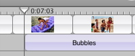

Adding sound effects
You can add sound effects to your movie to add drama, excitement, or humor. You can also layer sound effects over music or existing audio.

To add a sound effect:
- Click the Timeline Viewer button (A, shown above).
- Drag the playhead (B, shown above) to the frame where you want the sound effect to begin.
- Click the Media button, and then click Audio.
- Select a sound effects category at the top of the Audio pane.
- Select the sound effect you want to add to your movie.
- If you want, click the Play button to the left of the search field to listen to the effect you selected.
- Click "Place at Playhead."
- If you want to lock the sound effect to a specific frame, choose Advanced > "Lock Audio Clip at Playhead." If you reposition the video clip, the locked audio clip moves with it.
Tip: To precisely adjust the playhead position, press the Left or Right Arrow key to move the playhead one frame at a time. To move the playhead in ten-frame increments, hold down the Shift key while pressing the arrow key.
Tip: You can also search for a sound effect by typing text in the search field. As you type, effects that contain the text you entered appear in the Audio pane. To see all sound effects again, click the Reset button (an "x" in the search field).
The sound effect appears as an audio clip in the timeline viewer (shown below).

You can move the sound effect if you want to reposition it. (You need to unlock it from the video clip first if you've locked it.)
You can also adjust the volume or length of a sound effect. For more information, see Related Topics below.
Tip: You can also create your own musical sound effects by creating short clips in GarageBand and then exporting the sound clips to iTunes.
Related Topics
Making your movie louder or softer
Changing the length of an audio clip
 Was this page helpful? Send feedback.
Was this page helpful? Send feedback.